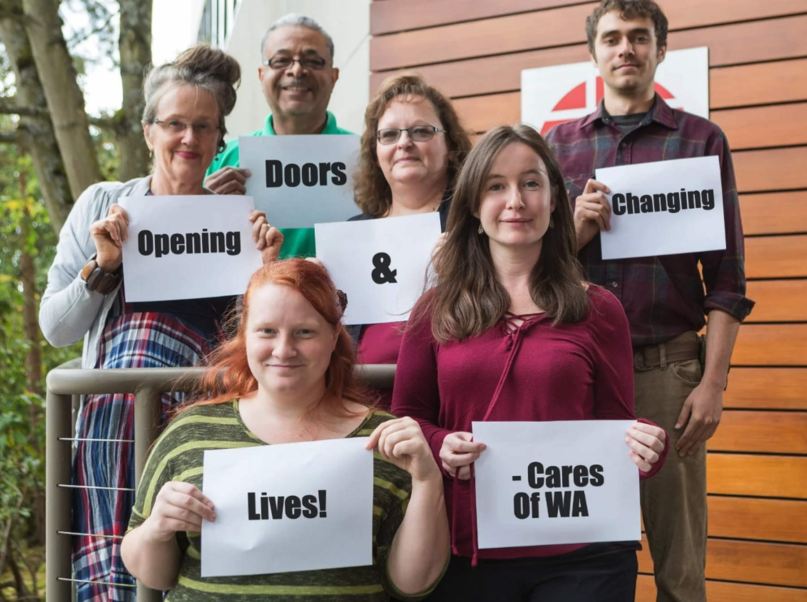

Cares of Washington has been helping people with disabilities and low incomes for over 40 years. Started in 1980 in Seattle as IAM CARES, it first helped injured Boeing machinists get back to work. After IAM CARES closed in 2003, the Washington State office became an independent nonprofit called Cares of Washington. This change let us help more people and get varied funding. Now based in Seattle, we support individuals in Snohomish, King, Pierce, and Kitsap counties with job readiness, placement, and retention. We are accredited by the Commission on Accreditation of Rehabilitation Facilities (CARF), showing our commitment to quality.
Our mission
Cares of Washington's mission is to "support people with disabilities and low incomes to realize their purpose, potential, and strength".
Vision
An equitable, inclusive community committed to stability and fulfillment.
Employment & Community Inclusion team
Advancement team
Accounting and admin team
CEO
"At Cares of Washington, we envision a community where every individual has the opportunity to reach their fullest potential and engage fully in both life and work. As a people-centered organization, we are deeply committed to empowering individuals with disabilities and low incomes through personalized, efficient, and innovative support strategies.
Our dedicated team continuously invests in education and active engagement to ensure meaningful and positive outcomes for every person we serve. By championing inclusion, equality, and personal choice, we strive to create meaningful job opportunities for those facing significant employment barriers.
Supporting Cares means investing in a future where trust and individuals' strengths drive community growth. Together, we can build a more inclusive workforce and help people embrace life's challenges and opportunities with confidence. Your contribution makes this vision possible - partner with us to open doors and change lives to strengthen our community."